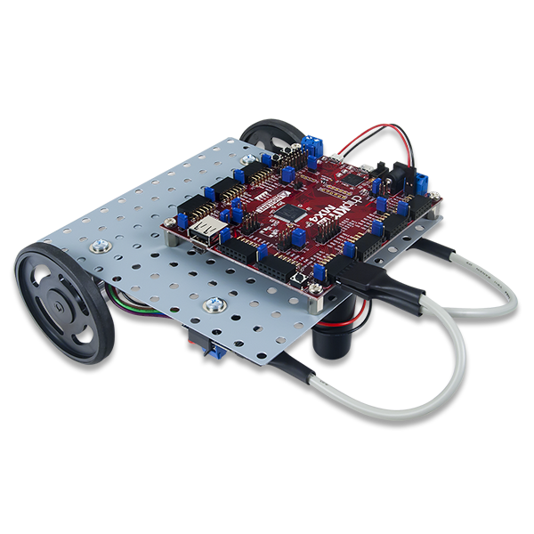

Status Updates

Update #7 - Finishing touches
December 4, 2016
Milestones:
-Almost finished up with addressing the previous android issues that we have been having.-Presentation Powerpoint Slides and Final Web Design are being wrapped up and will be delivered on time!
-Going through multiple attempts to demo the car and address any issues that can possibly come up.
Current Goals:
- Complete App
- Complete Website & Final Presentation Slides
Update #6 - Android Issues
November 26, 2016
Milestones:
-App has made significant progress. It is around 75% complete. We are just having to deal with a few issues that we havent figured out how to get around that certain issue.-We have acheived a state where all four Wheels on the car are working properly
-Currently working on hoping to add extra additions such as additional neopixels to add even more features.
Current Goals:
- Complete Android App
- Figure out additional features
Update #5 - Car Video
November 24, 2016
Update #4 - Functionality Established
November 5, 2016
Milestones:
- Android App Development has started and looking promising!- Downloaded and installed MPLab in order to program the board that works with the car.
Current Goals:
- Work on Android App
- Address current issues with Car
Update #3 - Functionality Established
October 24, 2016
Milestones:
-Established a functional relationship MPU 9150 and Arduino UNO. Successful reading and processing of Gyroscopic and Accel data, with implementation demonstrated through use of Neopixels.-Achieved basic functionality of PIC MRK-Basic robot car. One motor does not seem to work in reverse, but it might be a connection issue. Will investigate.
-Established Bluetooth connection and communication of packets of data with Android Device.
Current Goals:
- Coordinate seperate projects
-Integrate car, bluetooth, and phone.#2 - Hardware Overview
September 21, 2016
We've been provided with the following hardware for our Robotics application.
1)An Arduino Uno Microcontroller.
2) HC-05 and HC-06 Bluetooth Modules
(our actual boards vary slightly from those pictured)
3) An MPU-1950 9-axis motion sensor

4)An MRK Basic: Motor Parts kit with Cerebot32MX4 microcontroller


-
FEATURED Updates
Update # 5 Car Video
November 20, 2016 -
RECENT Updates
-

Finishing touches
December 4, 2016 -
android issues
November 26, 2016
-